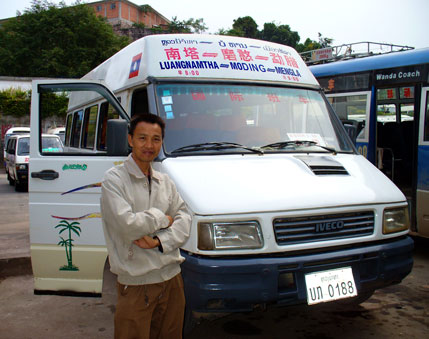
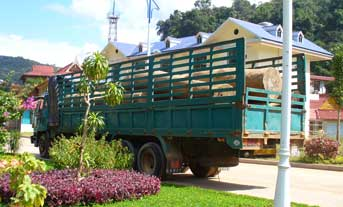
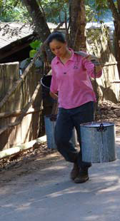
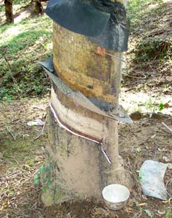
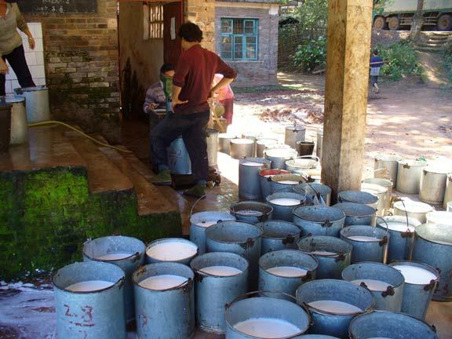

November 16, 2005
Hi Folks,
 6:30 AM. A few more changes for the better. I need to change money back to dollars, get bus ticket, and decide which bus station to use for the trip towards Laos. The bank opens at 8, but is somewhere on the other side of town.
Just when finished packing, a sudden knock on the door of the hotel. It's Xenbansen, the same pedicab driver who brought me here last night, eager to take me to the bus station. I say "bank, bus station". He says "I change money". I'm reluctant, but think of time saved and decide to go for it. He doesn't have U.S. singles, so I get a $10 note and a bunch of Laotian kip for the $12.50 valued 100-Yuan note. Now we can just walk down to the closer bus station.
The May, 2005 Lonely Planet China travel guide says to cross the Laos border from Mengla, China, you take the following steps:
- From either #2 or the long distance bus station, to Mohan 1.5 hours,
- China exit formalities,
- tractor or truck 3 km to Boten, Laos,
- purchase Lao visa, go through immigration,
- and (Lonely Planet South-East Asia) passenger truck, 2 per day to Luang Nam Tha, 2-3 hours.
To my surprise, while purchasing my ticket for Mohan in the long distance bus station, someone mentions "Nam Tha". "Luang Nam Tha?" Yes, a bus ticket all the way! Now keep in mind, we don't speak each other's language (even the words "China" and "Laos" are not mutually understood), but it appears (only) the 9 AM bus from the long distance station continues past Mohan, all the way to Luang Nam Tha in Laos, thereby removing several hassles. One look at the bus removed all doubts. Top right: Xenbansen in front of bus to Luang Nam Tha
Forty five minutes before the bus leaves, so I stock up on water and food. It could still be a long day. The bus leaves the station a few minutes after 9, but meanders and stops all around town for over an hour, picking up auto and truck parts as well as furniture. Without a luggage rack topside, everything has to be piled in and around the seats and in the isle ways. I give up my preferred double seat behind the driver for a single seat further back, so the floor space can accommodate two new huge truck wheels. My big pack safely occupies a spot on the floor in the back row. I'm the only westerner aboard, but feel comfortable.
The road is old, but the new highway construction project crisscrosses our path often. All traffic is stopped occasionally, the first time in front of a public restroom facility. Everyone uses it. The second stop is near a village surrounded by producing rubber trees. Time for some pictures, so I indicate to the driver I'll be walking down the road.
Workers carry the latex solution (above) to the collection station shown below, where it is weighed, sampled, and the buckets washed.
The road was closed for over an hour. My concern was that the border would be closed for an hour or two at noon, making for a late entry into Nam Tha. Finally we see vehicles coming from the other way and know it's our turn next. We pile back into the bus.
It's almost 1 PM when we arrive at the Chinese exit point. Everything is open. I'm the last one off the bus, but all the paperwork is in order, so I'm the first to get back to the bus. Just like my last border crossing into Laos in 2003, many trucks hauling huge logs out of the country are lined up at the check point. I'm saddened to think the little jungle that is left won't last long.
Now on to Laos.
Hope everyone is fine and enjoying life.
Bill